Generative Models for Approximating Cardinality Sketches
Brian Tsan
UC Merced
btsan@ucmerced.edu
Advisor: Professor Florin Rusu
Recap
Query Optimization Problem
AGMS (Tug-of-War) Sketch
Other Sketches
Generative Models for Approximate Sketching
Neural Networks Sum-Product Networks
Summary & Conclusion
Curriculum Vita
2018
Degree
B.Sc. CSE
UC Merced
2019
Started
MS Program
UC Merced
2021
DJEnsemble: On the Selection of a Disjoint Ensemble of Deep Learning Black-Box Spatio-temporal Models
SSDBM'21
2022
Detect, retrieve, comprehend: a flexible framework for zero-shot document-level question answering
LLNL Internship
2023
Analyzing Query Optimizer Performance in the Presence and Absence of Cardinality Estimates
arXiv
Jan 2024
Milestone
PhD Candidacy
2024
• Approximate Sketches (SIGMOD'24)✨
• Sub-optimal Join Order... (SIGMOD'24)
• Simpli-Squared... (SiMoD'24)
2025
Recent Work
• PLANSIEVE (aiDM'25 workshop)
• Sketched Sum-Product Networks (TBA)✨
Approximate Sketches (SIGMOD'24)
Example Query
SELECT COUNT(*) FROM customers c JOIN orders o ON c.customer_id = o.customer_id
WHERE c.age = 35 AND c.city = 'SF'
Input Embeddings
age
h(35) = 7
city
h('SF') = 12
customer_id
[MASK]
→
BERT
→
P(h(customer_id) | conditions)
[0.12, 0.08, 0.15, 0.10, ...]
Sketch: p × |σ(customers)|
Summary
✓Pros
Efficient approximation
Accurate sketches
Fast queries
❌Cons
Long training
Large model size
GPU-bottlenecked
Therefore, I need a new model!
Joins
Find all students enrolled in special seminar courses
SELECT s.name, e.student_id, c.course_name
FROM Students s
JOIN Enrollments e ON s.student_id = e.student_id
JOIN SpecialCourses c ON e.course_id = c.course_id
Joins
Students (5 rows)
ID Name 1 Alice 2 Bob 3 Carol 4 Dave 5 Eve
Enrollments (10 rows)
SID CID 1 101 2 101 1 201 3 201 4 202 5 202 2 203 3 203 4 204 5 205
SpecialCourses (2 rows)
ID Course 101 CS101 201 CS102
Plan A: Join Students First (Bad Plan)
Step 1: Students ⋈ Enrollments
Students
ID Name 1 Alice 2 Bob 3 Carol 4 Dave 5 Eve
⋈
Enrollments
SID CID 1 101 2 101 1 201 3 201 4 202 5 202 2 203 3 203 4 204 5 205
Cost: 5 × 10 = 50 comparisons
Plan A: Join Students First (Bad Plan)
Step 1: Students ⋈ Enrollments
Students
ID Name 1 Alice 2 Bob 3 Carol 4 Dave 5 Eve
⋈
Enrollments
SID CID 1 101 2 101 1 201 3 201 4 202 5 202 2 203 3 203 4 204 5 205
Cost: 5 × 10 = 50 comparisons
Plan A: Join Students First (Bad Plan)
Step 1: Students ⋈ Enrollments
Students
ID Name 1 Alice 2 Bob 3 Carol 4 Dave 5 Eve
⋈
Enrollments
SID CID 1 101 2 101 1 201 3 201 4 202 5 202 2 203 3 203 4 204 5 205
Cost: 5 × 10 = 50 comparisons
Plan A: Join Students First (Bad Plan)
Step 1 Result: 10 intermediate rows
Plan A: Join Students First (Bad Plan)
Step 2: Result ⋈ SpecialCourses
⋈
SpecialCourses
ID Course 101 CS101 201 CS102
Cost: 10 × 2 = 20 comparisons
Plan A: Join Students First (Bad Plan)
Step 2: Result ⋈ SpecialCourses
⋈
SpecialCourses
ID Course 101 CS101 201 CS102
Cost: 10 × 2 = 20 comparisons
Plan A: Join Students First (Bad Plan)
Final Result: 4 rows
Final Result
Name Course Alice CS101 Bob CS101 Alice CS102 Carol CS102
Total Cost:
50 + 20 = 70 comparisons
Plan B: Join SpecialCourses First (Good Plan)
Step 1: SpecialCourses ⋈ Enrollments
SpecialCourses
ID Course 101 CS101 201 CS102
⋈
Enrollments
SID CID 1 101 2 101 1 201 3 201 4 202 5 202 2 203 3 203 4 204 5 205
Cost: 2 × 10 = 20 comparisons
Plan B: Join SpecialCourses First (Good Plan)
Step 1: SpecialCourses ⋈ Enrollments
SpecialCourses
ID Course 101 CS101 201 CS102
⋈
Enrollments
SID CID 1 101 2 101 1 201 3 201 4 202 5 202 2 203 3 203 4 204 5 205
Cost: 2 × 10 = 20 comparisons
Plan B: Join SpecialCourses First (Good Plan)
Step 1: SpecialCourses ⋈ Enrollments
SpecialCourses
ID Course 101 CS101 201 CS102
⋈
Enrollments
SID CID 1 101 2 101 1 201 3 201 4 202 5 202 2 203 3 203 4 204 5 205
Cost: 2 × 10 = 20 comparisons
Plan B: Join SpecialCourses First (Good Plan)
Step 1 Result: Only 4 intermediate rows!
Step 1 Cost:
2 × 10 = 20 comparisons
✓ Early filtering! Only 4 rows instead of 10
Plan B: Join SpecialCourses First (Good Plan)
Step 2: Result ⋈ Students
⋈
Students
ID Name 1 Alice 2 Bob 3 Carol 4 Dave 5 Eve
Cost: 4 × 5 = 10 comparisons
Much smaller intermediate result!
Plan B: Join SpecialCourses First (Good Plan)
Step 2: Result ⋈ Students
⋈
Students
ID Name 1 Alice 2 Bob 3 Carol 4 Dave 5 Eve
Cost: 4 × 5 = 10 comparisons
Much smaller intermediate result!
Plan B: Join SpecialCourses First (Good Plan)
Final Result: 4 rows
Final Result
Name Course Alice CS101 Bob CS101 Alice CS102 Carol CS102
Total Cost:
20 + 10 = 30 comparisons
Why Join Ordering Matters
❌ Plan A: Bad Order
Step 1: Students ⋈ Enrollments
Step 2: Result ⋈ SpecialCourses
Total: 70 comparisons
✓ Plan B: Good Order
Step 1: SpecialCourses ⋈ Enrollments← Early filter!
Step 2: Result ⋈ Students
Total: 30 comparisons
Why Join Ordering Matters
Plan B is 2.3× faster
Join with selective tables first to filter earlySmaller intermediate results = fewer comparisons in subsequent joinsFor large tables, the difference can be orders of magnitude
The Challenge: How can the query optimizer choose the best join order
before execution?
→ We need cardinality estimation to predict intermediate result sizes!
The Query Optimization Problem
Query optimizers need to estimate cardinality
Cardinality = size of query result
Poor estimates → Poor query plans → Slow queries
Critical for joins and selections
Example: Wrong estimate leads to wrong join order
10x slower query execution!
The Independence Assumption
Traditional estimators assume columns are independent
Reality: Data is often correlated!
This assumption fails → Massive estimation errors
Traditional Approaches & Their Limitations
Histograms
✅ Work well for single columns
❌ Multivariate = exponential space
❌ Still assume independence
Machine Learning
✅ Multivariate distributions
❌ Training overhead
❌ Join estimation challenging
Enter: Sketches
Sketch: Compact probabilistic data structure
Sub-linear space usage
Fast updates and queries
Theoretical accuracy guarantees
Can handle joins naturally!
But... they're query-specific 😕
The Tug-of-War Metaphor
AGMS Sketch: Elements compete in a "tug-of-war"
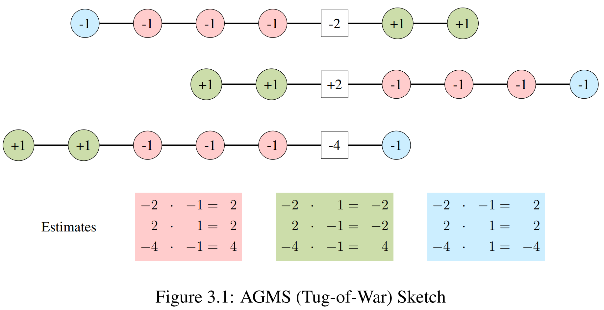
Each color assigned to +1 or -1 team
Pairwise Independent Hashing
Hash function: $\xi: \mathbb{R} \rightarrow \{\pm 1\}$
The reason tug-of-war works:
$\mathbb{E}[\xi(i)\xi(j)] = \begin{cases} 0 & \text{if } i \neq j \\ 1 & \text{if } i = j
\end{cases}$
Point Selection Estimation
To estimate frequency of value $j$:
$f_j \approx s \cdot \xi(j)$
where $s = \sum_{i \in X} \xi(i)$ is the sketch
Unbiased! $\mathbb{E}[s \cdot \xi(j)] = f_j$
Variance: $\text{Var}[s \cdot \xi(j)] = F_2(X) - f_j^2$
AGMS Variance for frequency $f_j$
High-frequency items → Lower variance
AGMS has high variance...
so you need to play a lot of tug-of-war!
Fast-AGMS: The Speed-Up
Use width-$w$ array instead of single counter
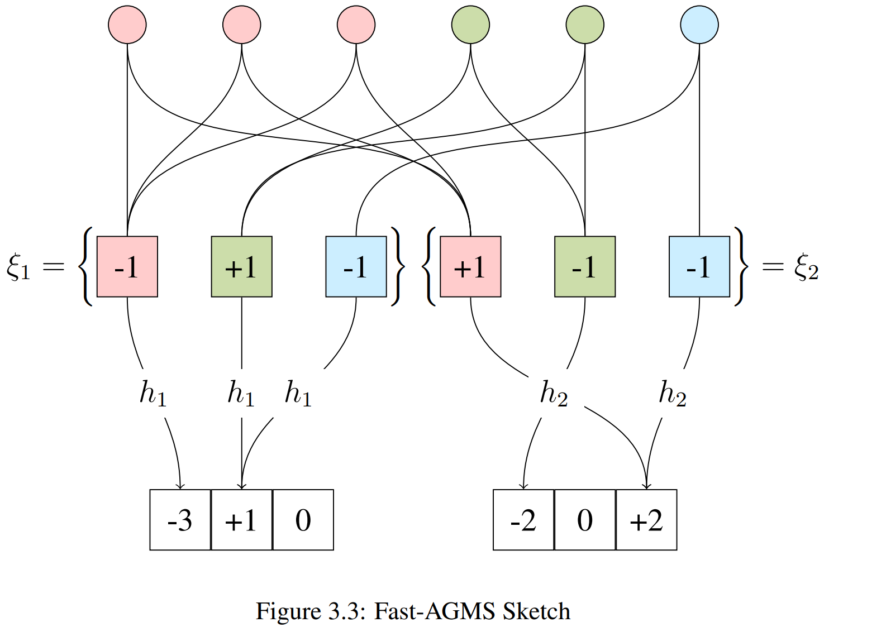
Each element goes to ONE counter → 1/w update time!
Range Queries: Dyadic Intervals
How to handle range predicates?
Decompose range into dyadic intervals!
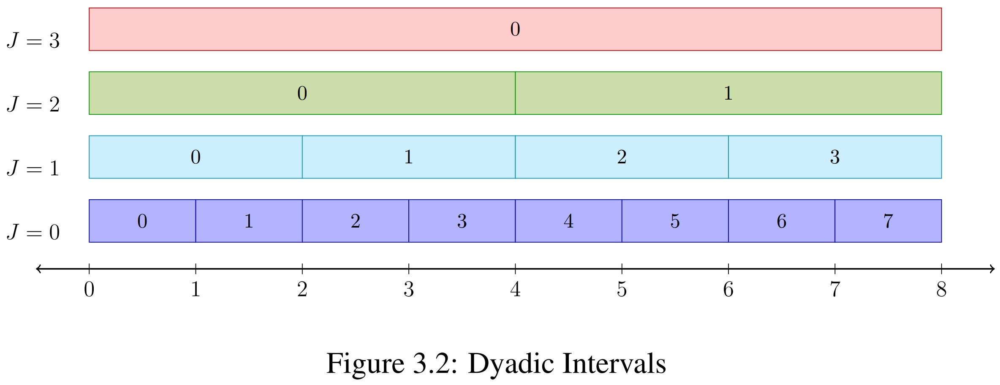
Any range decomposes into ≤ $2(\log_2(b-a) - 1)$ intervals
Join Cardinality Estimation
For join $X \bowtie Y$:
$|X \bowtie Y| \approx S_X \cdot S_Y$
Dot product of sketch vectors!
$T_1 \bowtie T_2 \bowtie T_3$
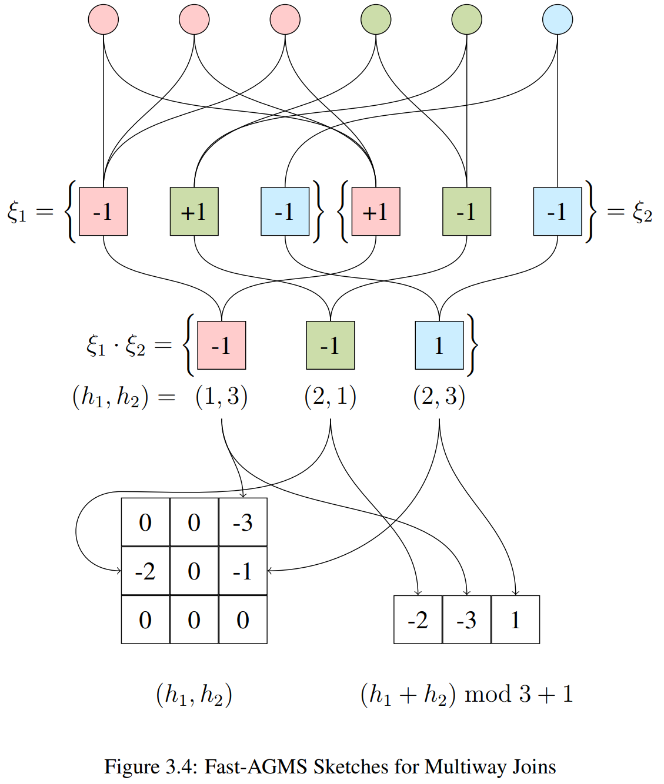
This generalizes to sktech tensors for more joins
But tensor size grows exponentially...
Efficient Multiway Joins: FFT
Avoiding Tensors with Circular Convolution
Tensor size grows exponentially ($N^{\text{cols}}$)
Convolution theorem: $A * B = \mathcal{F}^{-1}(\mathcal{F}(A) \cdot \mathcal{F}(B))$
Compute in $O(N \log N)$ using Fast Fourier Transform!
Count-Min Sketch
Simplified: Always increment (no $\xi$ hash)
Trade-off: Biased (overestimates), but simpler & faster
Bound Sketch: Tighter Bounds
Track maximum frequency per bucket
$\max_i f_i \leq \sum_i f_i$ → Tighter than Count-Min!
Sketch Properties Summary
Sketch
Linear?
Unbiased?
Space
Update Time
AGMS ✅ Yes
✅ Yes
O(d)
O(d)
Fast-AGMS ✅ Yes
✅ Yes
O(dw)
O(d)
Count-Min ✅ Yes
❌ No (upper bound)
O(dw)
O(d)
Bound ❌ No
❌ No (upper bound)
O(dw)
O(d)
d = # independent sketches, w = sketch width
The Problem with Sketches
Issue 1: Selections + Joins
→ Would need exponential sketch tensors
Issue 2: Query-specific construction
→ Need to scan entire dataset for each query
Issue 3: Many queries = many sketches
→ Storage explosion for diverse workloads
Solution: Approximate Sketches
Idea: Use ML models to generate sketches on-demand
Offline
→
Online
No data scan required! ✨
Two Modeling Approaches
Neural Networks
Transformers for attention
Hardware accelerated
High capacity
Gradient descent training
Sum-Product Networks
Probabilistic graphical model
Tractable inference
Fast training
Interpretable structure
Both approaches: Learn distribution → Generate sketches
The Limitation of Traditional Sketches
Sketches must be built for specific selections
Selection = table rows satisfying filter conditions
Problem: Filters are specified at query time
Example Query:
SELECT COUNT(*)
FROM orders o JOIN customers c ON o.customer_id = c.id
WHERE o.year = 2024 AND c.region = 'West'
Need sketches for σyear=2024 (orders) and σregion='West' (customers)
Three Approaches to the Problem
1. Pre-compute All Sketches
Build sketches for every possible selection
Issue: Exponential combinations10 attributes × 100 values each = 10010 possibilities
Infeasible!
2. Build at Query Time
Filter data, then construct sketch
Issue: Requires full table scanCOMPASS (GPU-accelerated): still hundreds of ms
High overhead!
Three Approaches to the Problem
3. Approximate Sketches ✓
Train a model on the table (offline)
At query time: model predicts the sketch
Benefit: Fast inference (~5-10 ms)Practical for query optimization!
Approximation Pipeline
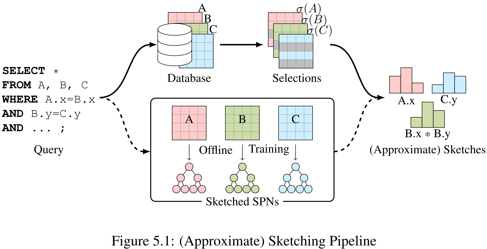
The exact sketching pipeline (top) is impractical.
Using Transformers to Approximate Count-Min Sketches
Probabilities into Sketches
A Count-Min sketch can be expressed as:
sketch(σφ (T)) = p × |σφ (T)|
Where:
p ∈ ℝw = probability mass distribution over hash bins|σφ (T)| = cardinality of the selection
φ = filter predicates (e.g., age > 30 AND city = 'SF')
Idea: Train a model to estimate p for ANY predicate φ
Probabilities into Sketches
For a hash function h : ℝ → {1, ..., w}:
pi = P(h(X) = i | φ)
The i-th counter in the sketch:
sketch[i] = Σx ∈ σφ (T) 𝟙h(x)=i
φ (T)| × P(h(X) = i | φ)
Therefore: sketch = p × |σφ (T)|
Transformer Architecture
Example Query
SELECT COUNT(*) FROM customers c JOIN orders o ON c.customer_id = o.customer_id
WHERE c.age = 35 AND c.city = 'SF'
Input Embeddings
age
h(35) = 7
city
h('SF') = 12
customer_id
[MASK]
→
BERT
→
P(h(customer_id) | conditions)
[0.12, 0.08, 0.15, 0.10, ...]
Sketch: p × |σ(customers)|
Why Bidirectional Transformers?
Unidirectional (NeuroCard)
Predicts P(Xi | X1 , ..., Xi-1 )
Fixed column ordering
Cannot condition on "future" columns
Limitation: Sketch column must come after all filter columns
Bidirectional (BERT)
Predicts P(Xi | all other Xj )
No column ordering constraint
Uses MASK tokens for prediction
Advantage: Filters on ANY attributes work!
Essential for approximating sketches with arbitrary filter conditions
Training Data: Raw Table
Start with actual database table rows
customer_id
age(point
pred)
city(point
pred)
year(range
pred)
1001
35
'SF'
2022
1002
42
'NY'
2019
1003
28
'LA'
2021
1004
55
'SF'
2023
Goal: Transform this data to train BERT to predict sketches for any filter
condition
Training Pipeline
Stage
Point Predicate (e.g., city)
Range Predicate (e.g., year)
1. Raw Value
'SF'
2022
2. Dyadic Annotation
—
[2022,2023)2⁰ , [2022,2024)2¹ , ...
3. Hash
h('SF') = 12
h0 = 45, h1 = 28, ...
4. Embedding
Map each hash to learnable
vector in ℝd
5. Training
BERT masked language modeling:
[h₁, h₂, [MASK], h₄] → predict h₃
Note: Range predicates require dyadic interval annotation before hashing.
Point predicates hash directly.
Join Cardinality Estimation Process
For query: SELECT * FROM A JOIN B ON A.x = B.y WHERE ...
Approximate Sketches:
Model for A: infer sketch(σφ (A).x)
Model for B: infer sketch(σψ (B).y)
Estimate Join:
|A ⋈ B| ≈ sketch(A) · sketch(B)
Take median of d independent estimates
Join Query
SELECT COUNT(*) FROM customers c JOIN orders o ON c.customer_id = o.customer_id
WHERE c.age = 35 AND c.city = 'SF' AND o.year = 2023
Join Cardinality Estimate
|customers ⋈ orders| ≈ Sc · So
Dot product of sketch vectors
Experimental Setup
Datasets:
IMDb — 6 tables, 20 columns, up to 36M rows
JOB-light: 70 queriesJOB-light-ranges: 1000 queries
Baselines:
Exact Fast-AGMS and Count-Min Sketches
NeuroCard (Full Outer Join Transformer model)
Metrics
Q-error: multiplicative error between estimated and true cardinality
P-error: multiplicative error between plan cost of estimated and best plan
Q-error by Sketch Width
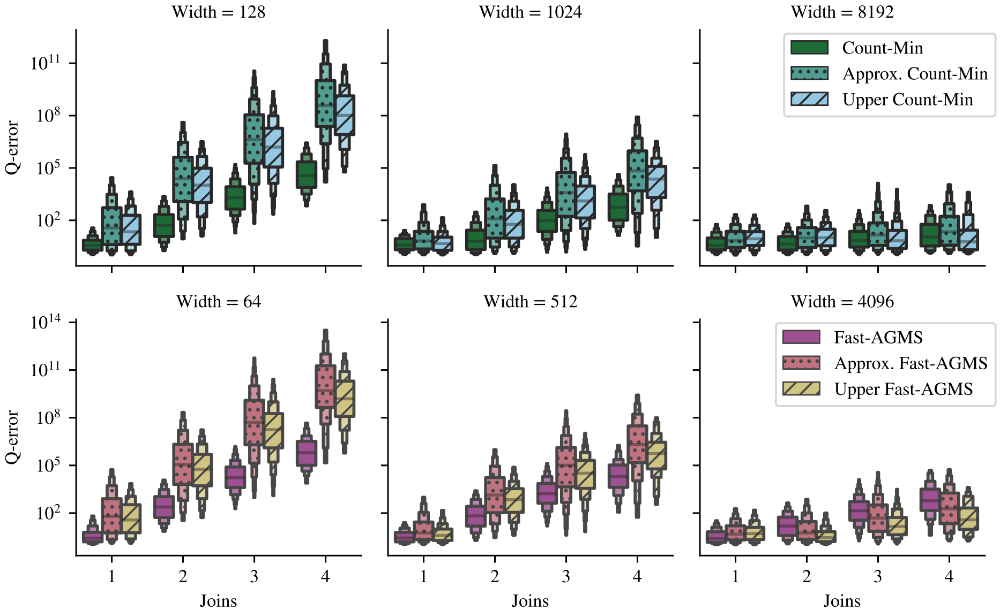
Estimation Time
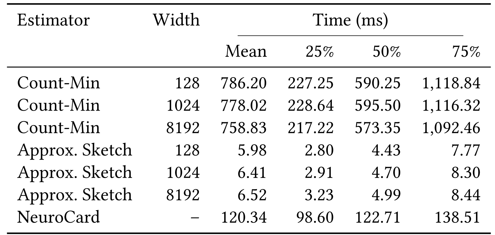
Approx. faster than exact (pushdown) sketches!
Limitations of Transformer Approach
Scalability Issue: Model size grows linearly with sketch width
Need w × d × n embeddings (one per hash bin per attribute)
GPU memory constraints limit practical width to ~4,096
Training Cost: Requires GPU acceleration
148 min/epoch on JOB-light (NVIDIA Tesla K80)
Becomes prohibitive for larger sketches
Problem: Larger sketches → better accuracy, but can't scale!
Scaling Beyond Transformer Limitations
What are Sum-Product Networks?
Trees made of:
Sum nodes: Mixture of distributions (weighted average)
Product nodes: Factorization of independent distributions
Leaves: Simple univariate distributionsRoot: Represents full joint distribution
What are Sum-Product Networks?
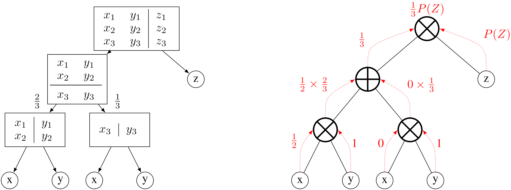
Training left, inference right
Training
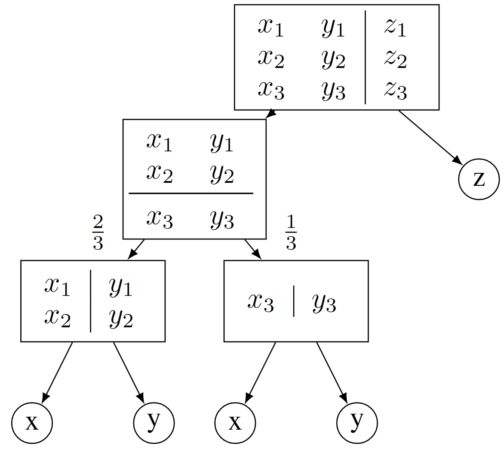
One random variable
Independent variables
Otherwise
Inference
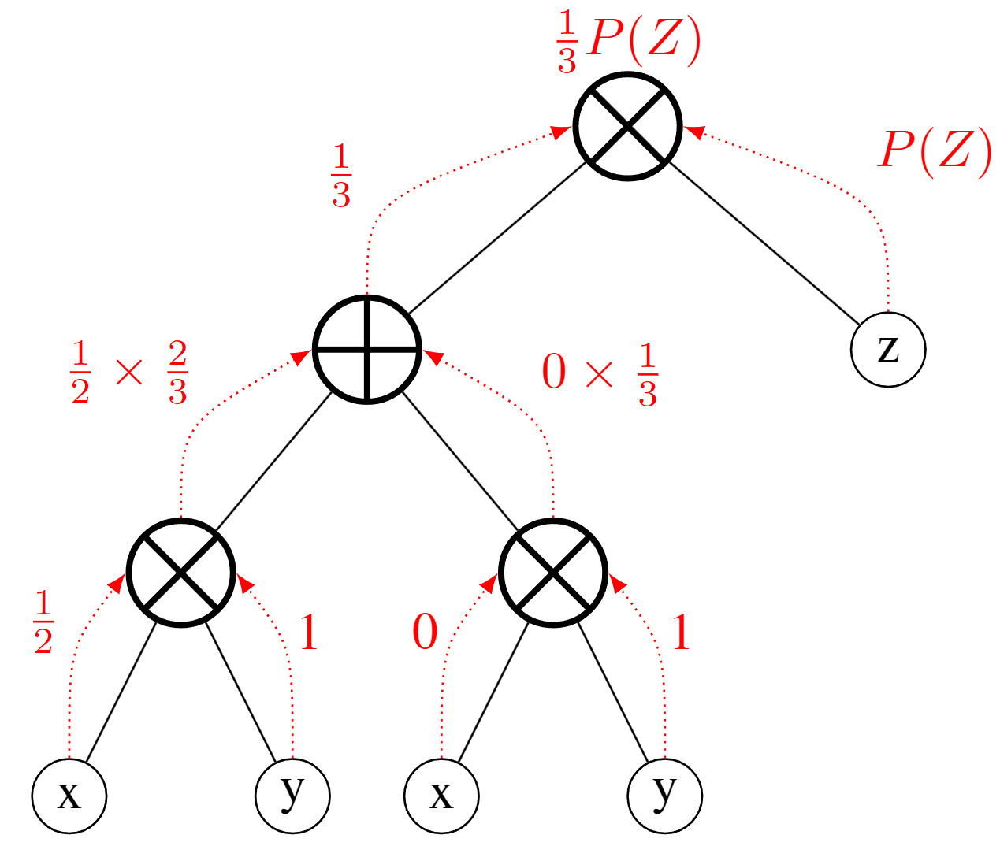
Query for
SPNs for Multivariate Data
Decompose complex joint distributions as linear combinations:
P(X1 , ..., Xn ) = Σi wi × ∏j
Pij (Xj )
Advantages for Relational Data:
Can handle mixed data types:
both discrete & continuous
Less than exponential storage
No GPU required! Can train on CPU
Sketches from SPNs
Instead of storing probability distributions in leaf nodes...
Store sketches in leaf nodes!
Each leaf represents a partition of the data
Leaf stores the sketch of that partition
Sketches combine via sum/product operations
Result: Approximate sketch of any selection
Error Bound for SPN Approximations
Conjecture: Approximation error is bounded by independence assumption
||sketch(σφ (T)) - sketcĥ(σφ (T))||₁
φ (T)) - sketch(T)×∏P(φᵣ)||₁
Worst-case: Single product node (full independence assumption)
Tighter independence/clustering thresholds → Closer to exact sketches
Upward-Biased Estimation
Observation: Overestimation is safer
Underestimate → risky plans → catastrophic slowdown
Overestimate → cautious plans → marginally suboptimal
Two Techniques for Upward Bias:
Fast-AGMS Max: Take maximum instead of medianMin-Product Node: Use min selectivity instead of product
P(φ) × sketch → min{P(φᵢ)} × sketch
Experimental Setup
Datasets:
JOB-light: 70 queries (696 subqueries) on 6 IMDb tables
Transitive joins, star schema, up to 5 tables
Stats-CEB: 146 queries (2603 subqueries) on 8 Stack Exchange tables
Non-transitive joins, more skewed/correlated data
Baselines:
Exact Fast-AGMS and Bound Sketch
DeepDB, BayesCard, FactorJoin, FLAT (learned estimators)
Sketch Approximation Error
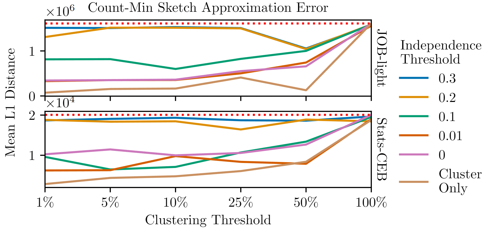
Takeaway: Just cluster, even a little bit, to drastically reduce error!
Approximation Efficiency
Metric
Exact Sketches
Approximate Sketches
Sketch Construction Time
737s (JOB-light)
4.5s (JOB-light)
Space Required
473 MB (JOB-light)
1.2 GB model
Query Execution Time
2.88 hrs (JOB-light)
2.88 hrs (0!)
Within 3% of exact sketches! But much faster to compute.
Training Time Comparison
Method
Model
JOB-light
Stats-CEB
Approximate Sketches
BERT
148 min/epoch*
N/A
Sketched SPNs
SPN
21 min
2 min
DeepDB
SPN
30 min
55 min
BayesCard
Bayes Net
6 min
2 min
FactorJoin
Bayes Net
4 min
1 min
*GPU required; others CPU-only
Sketched SPNs competitive with other per-relation methods
Model Complexity Trade-off
Query Execution Time
Exact F-AGMS would be the fastest, if not for construction time!
Model Comparison on JOB-light
BERT
Limited by GPU memory
Model size: 167 MB
Training: 148 min/epoch
Query Execution: 3.05 hrs
SPNs
No GPU required
Model size: 40 MB
Training: 18 min total
Query Execution: 2.93 hrs
Novel Contributions
1. Approximate Sketches (SIGMOD 2024)
First application of neural networks to sketching
Enables sketches for arbitrary filter conditions
Bidirectional architecture handles any column ordering
2. Sketched Sum-Product Networks (2025)
Scalability: larger sketches (no GPU bottleneck)
Upward-bias: Fast-AGMS Max + Min-Product nodes
Error bounds: worst-case = independence assumption
Impact on Query Optimization
Makes sketches practical
No pre-computing sketches for selections
No expensive query-time sketch construction
Fast inference, suitable for optimization
Scales to large databases (per-relation models)
Bringing It Together
1. Problem: Cardinality estimation is critical
2. Challenge: Joins are hard to estimate
3. Sketches: Fast, accurate, but limited
4. Our Solution: Learn distribution → Generate sketches
5. Results: Fast generation, high accuracy
Enables sketches for query optimization
without per-query construction!
Questions?
Brian Tsan
btsan@ucmerced.edu
Advisor: Professor Florin Rusu
Code & demos available at: github.com/btsan